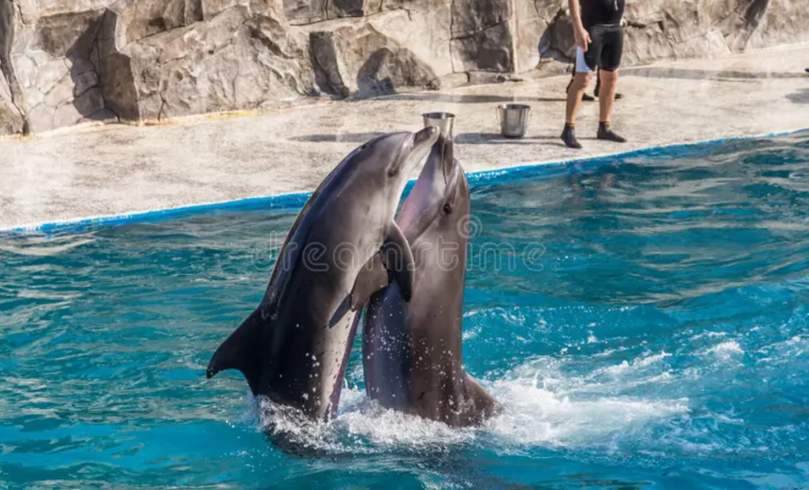

ბათუმის დელფინარიუმი - დელფინარიუმი აჭარაში, ზღვისპირა ქალაქ ბათუმში. გაიხსნა 1966 წელს.
ბათუმის სტუმართა ერთ-ერთი საყვარელი ადგილი დელფინარიუმია, სადაც მუდამ ხალხმრავლობაა. აქ თქვენ ნახავთ დელფინების საოცარ წარმოდგენას.
ბათუმის დელფინარიუმი მსოფლიოს უდიდეს დელფინარიუმებს განეკუთვნებოდა. დღევანდელი დელფინარიუმი წარმოადგენს თანამედროვე დიზაინის შენობას, ზ
ღვის ცხოველების ხელოვნურ პირობებში შენახვის უახლესი
შესაძლებლობებითა და საოცარი წარმოდგენებით.
დელფინების შოუ
დელფინების შოუ შოუს ელემენტებით გაჯერებული შემეცნებითი სანახაობაა, რომელიც ნებისმიერ ამინდში იმართება. შოუ ორენოვანია - ქართულ და ინგლისურ სანახაობაში
10 დელფინი მონაწილეობს – მაყურებლის პოზიტიური განწყობის შექმნაზე ზრუნავენ კაკო, მონიკა, ზორო, მაია, ბელუჩი, ნინი, ციცი და მისი ქალიშვილი ოლიმპია. ისინი
წარმოგიდგენენ 30-მდე ნომერს, სამ ცეკვას, რგოლებითა და ბურთებით თამაშს, კუდზე ბალანსს, დაუვიწყარ Foot Push-სა და მრავალ სხვა ახალ და ძველ შთამბეჭდავ ნომერს.
დელფინარიუმის ამფითეატრი შედგება 4 სექტორისაგან და გათვლილია 795 მაყურებელზე. ინფრასტრუქტურაში შედის შეზღუდული შესაძლებლობის მქონე პირთა მომსახურება პ
ანდუსითა და ლიფტებით.
დელფინების შოუ - სადემონსტრაციო პროგრამა ტარდება ყოველდღე (ორშაბათის გარდა).
ისტორია
ბათუმის სადემონსტრაციო აკვარიუმი 1966 წლის 20 აგვისტოს გაიხსნა. თავდაპირველად აქ წარმოდგენილი იყო წყნარი ოკეანის ჩრდილოეთ ნაწილის ფეხფარფლიანი ძუძუმწოვარი
ცხოველები, ძვირფასბეწვიანი წავები და კასპიის ზღვის სელაპები. მნახველებზე განსაკუთრებულ შთაბეჭდილებას ახდენდა ინდოეთის ოკეანის მობინადრე გიგანტური კუ, ე.წ. „ც
რუ კარეტა“, რომელიც დაახლოებით 100 კგ–ს იწონიდა. დეკორატიული თევზების მრავალფეროვნება მნახველთა განსაკუთრებულ ყურადღებას იპყრობდა. აკვარიუმში მტკნარი წყლებ
ის, სხვადასხვა ზღვისა და ოკეანის ცხოველთა 60–მდე სახეობა ბინადრობდა.
ამჟამად აკვარიუმში შავი ზღვის, საქართველოს მტკნარი წყლების ბინადართა ზოგიერთი და დეკორატიული თევზების 100–მდე სახეობაა წარმოდგენილი: ზღვის კატა , ზღვის მელა,
ზღვის ენა, კეფალისებრნი, ცხენთევზა, ხონთქარა, ნაგვერდალა და სხვა უნიკალური ჯიშის თევზები. ეგზოტიკური სახეობებიდან აღსანიშნავია ამაზონის ბინადარი პირანია, ციხლიდები,
ბათუმის დელფინარიუმი იყო პირველი სადემონსტრაციო დელფინარიუმი ყოფილი საბჭოთა კავშირის ტერიტორიაზე და მსოფლიოს უდიდეს დელფინარიუმებს განეკუთვნებოდა. 1990-იანი
წლების დასაწყისში ქვეყანაში შექმნილი რთული პოლიტიკურ-ეკონომიკური ვითარების გამო ობიექტმა ფუნქციონირება შეწყვიტა. 20 წლიანი პაუზის შემდეგ, 2011 წლის 6 მაისს ქალაქის მე
რიის ინიციატივით კვლავ გაიხსნა სრულიად ახალი ბათუმის დელფინარიუმი.
